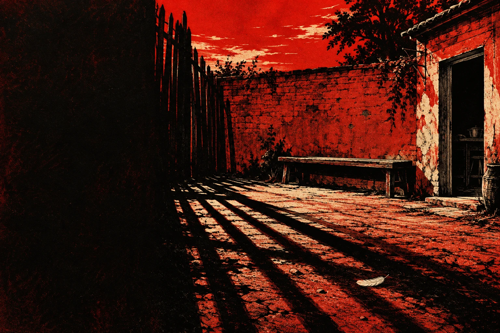
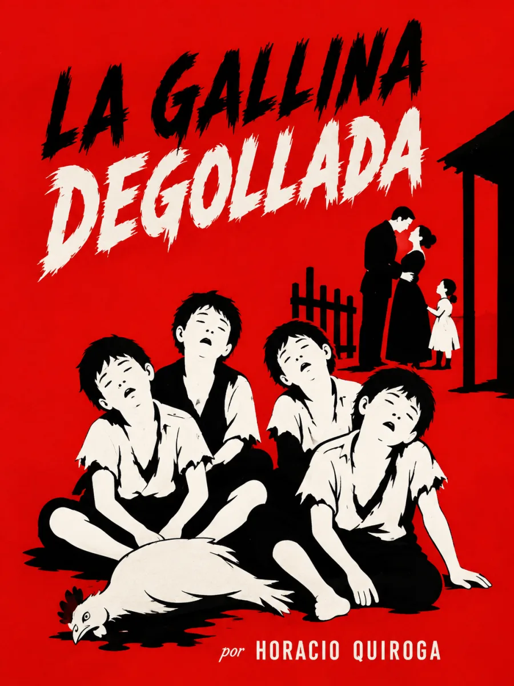

Audiolibros · Cuarta Ola
Horacio Quiroga · Primera publicación: 1909
En Cuentos de amor de locura y de muerte: 1917
La gallina
degollada
El horror comienza en casa.
Un patio, un muro, una familia dividida.
La luz de la tarde ya no promete refugio.

Escuchar cómo se quiebra lo cotidiano.
Grabación próximamente
Volumen

La casa que deja de cuidar
Mazzini y Berta viven entre la angustia por sus cuatro hijos mayores y los reproches que erosionan su matrimonio. Con el nacimiento de Bertita, vuelcan en ella su atención mientras los hermanos quedan relegados al patio. Un acto doméstico presenciado por los niños prepara el desenlace.
El patio no está lejos de la familia: está fuera de su cuidado.
La repetición del banco, el muro y la luz del atardecer organiza la tensión. Quiroga hace que los gestos cotidianos regresen con un sentido cada vez más inquietante; la violencia final se anuncia en una convivencia marcada por el abandono y la hostilidad.
La voz narrativa emplea un vocabulario deshumanizador para representar la discapacidad. Leerlo críticamente permite atender tanto a la construcción del horror como a la mirada que lo sostiene. En la escucha, los diálogos del matrimonio rompen la quietud del patio y exponen el desgaste de los vínculos.
Incluido en Cuentos de amor de locura y de muerte (1917). Texto consultado · Ciudad Seva. Ilustración interpretativa. El cuento apareció en prensa en 1909, antes de su inclusión en la colección de 1917. Biblioteca Nacional Mariano Moreno.
La lectura
Lectura completa
Grabación próximamente. El cuento se ofrecerá como una lectura continua, sin divisiones añadidas.
Valoración

Bueno